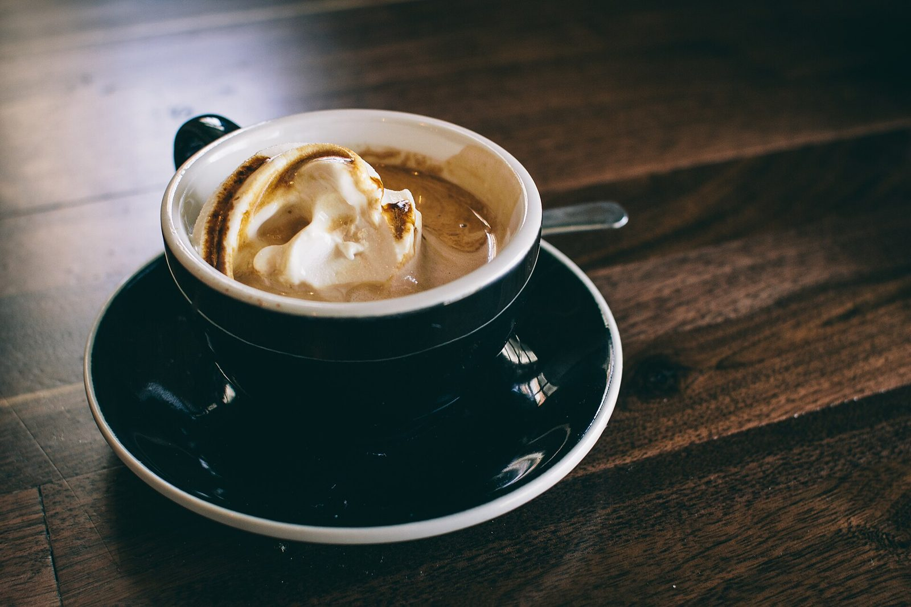
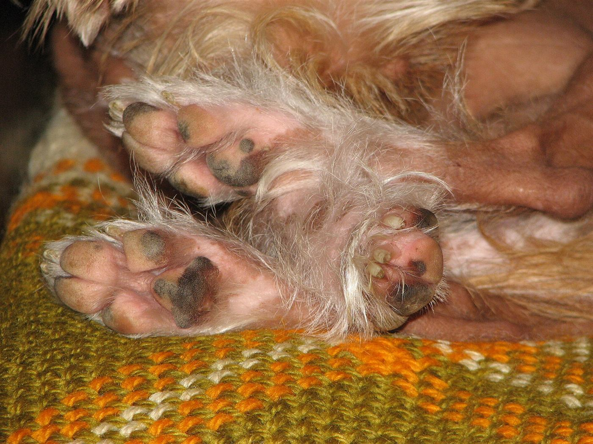

Black coffee cup (Unsplash) / Ross Parmly / CC0 1.0(撮影地: 撮影地不明)
ABOUTお店の由来と想い
静岡県賀茂郡南伊豆町湊、弓ヶ浜から歩いて3分ほどの場所にあるカフェです。南伊豆新聞の記事によると、2001年に開業した自宅兼店舗で、店主の山田さんは南伊豆のご出身。小さい頃からケーキや料理が好きで、「いつか自分の店を」という思いから、家を建てるときに店を始める前提で自宅兼店舗にしたそうです。
店名の由来「Hiphop」という言葉のリズムが好きだったこと。そして「Hip」にかけて、来てくれた人と「おしりあい(お知り合い)」になりたいという思いも込められているそうです。
メニューのつくり方自分の感覚、自分が美味しいと感じたものを大事に。「これとこれを組み合わせたら」と日々考えて、既存のお店にないメニューを足していくスタイルです。
店内の様子店主の好きな少年漫画が並び、女性客の声から少女漫画も加わったとのこと。
以上は南伊豆新聞の記事(minamiizu.news/0018.html)と、お店のInstagramプロフィールで確認できた内容です。写真は全てフリー素材のイメージです。

Dog paws / HTO / パブリックドメイン(撮影地: 撮影地不明)


MOODカフェのひととき(イメージ)
お店の実際の写真ではなく、雰囲気をお伝えするフリー素材です。

Black Coffee with Cream and Sugar / GuavaTrain / CC BY-SA 4.0(撮影地: 米国)

Coffee and coffee cake (Unsplash) / Stephanie McCabe / CC0 1.0(撮影地: 米国カリフォルニア州)

Kuchō, Ikata at sunset / Amake / CC BY-SA 3.0(撮影地: 愛媛県伊方町)

Icecream Gelato / JESHOOTS.com / CC0 1.0(撮影地: 撮影地不明)

Hot chocolate (Unsplash) / Alisa Anton / CC0 1.0(撮影地: 撮影地不明)

Ice Cream Treat (Unsplash) / Joseph Gonzalez / CC0 1.0(撮影地: 撮影地不明)

Melting Ice Cream (Unsplash) / Evan Kirby / CC0 1.0(撮影地: 撮影地不明)

Mocha Cake - Djanogly Café, Tate Britain 2026-03-24 / Andy Li / CC0 1.0(撮影地: 英国・ロンドン)

Plate of Pasta (Unsplash) / Eaters Collective / CC0 1.0(撮影地: 撮影地不明)

Chocolate raspberry dessert / Funknendai / CC0 1.0(撮影地: 撮影地不明)
VOICE口コミ
以下は制作側が作成したイメージ例です。実在のお客様の声ではありません。
イメージ例
オムライスもナポリタンも食べたい日にぴったり。ひと皿で両方楽しめて得した気分になりました。
イメージ例
肉球の形の白玉がかわいくて、思わず写真を撮りました。海の帰りに寄れる距離なのも嬉しいです。
イメージ例
漫画が並んでいて、ついのんびり長居。家に遊びに来たような気楽さがあります。
ACCESSアクセス・店舗情報
| 住所 | 〒415-0152 静岡県賀茂郡南伊豆町湊715-1(弓ヶ浜から徒歩3分ほど) |
|---|---|
| 電話 | 準備中 |
| 営業時間 | 10:00〜17:00(Instagramプロフィールより。臨時休業あり) |
| 定休日 | 第2・第4日曜日(Instagramプロフィールより)。記事では7・8月は休業とも紹介されていました。最新の営業日はInstagramでご確認ください |
| @hips_2001_ |